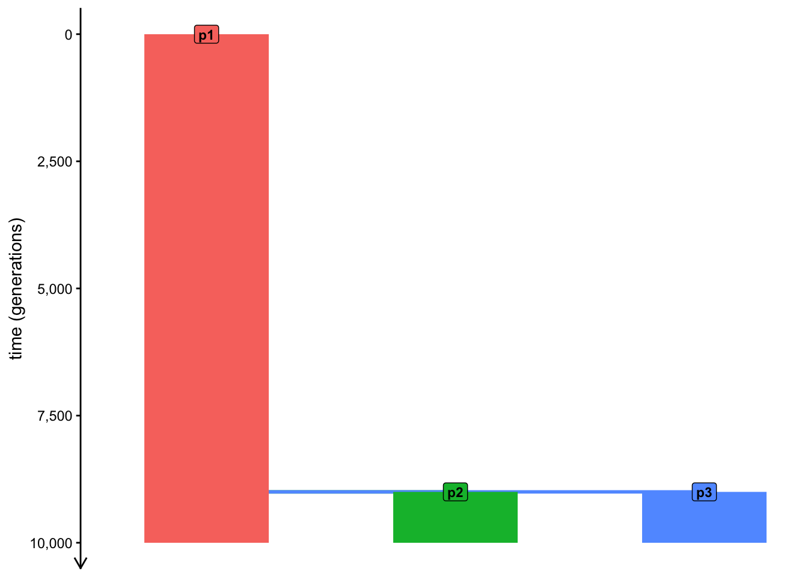
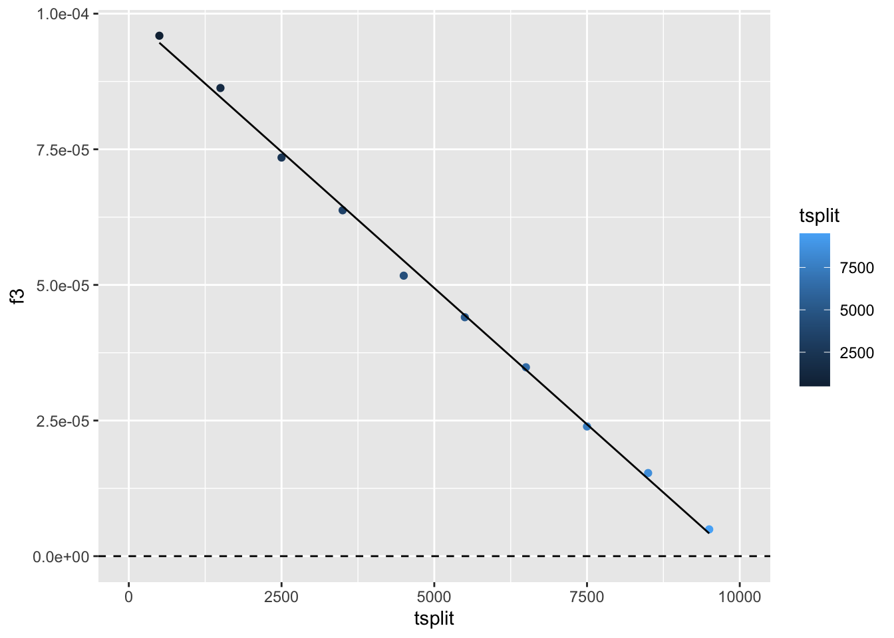
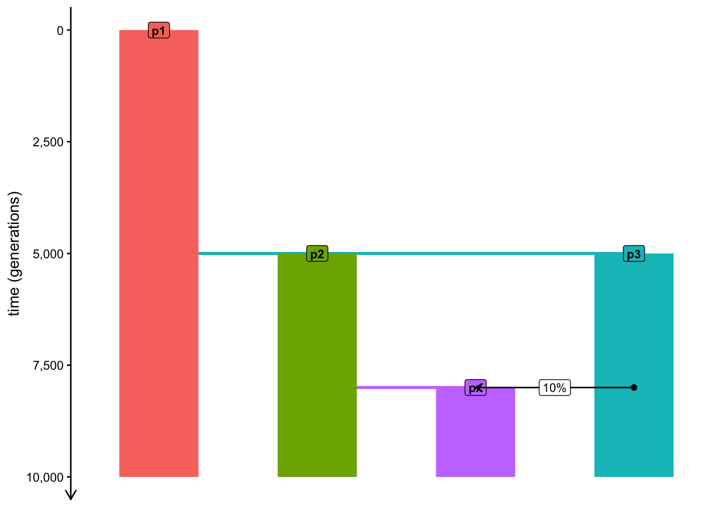
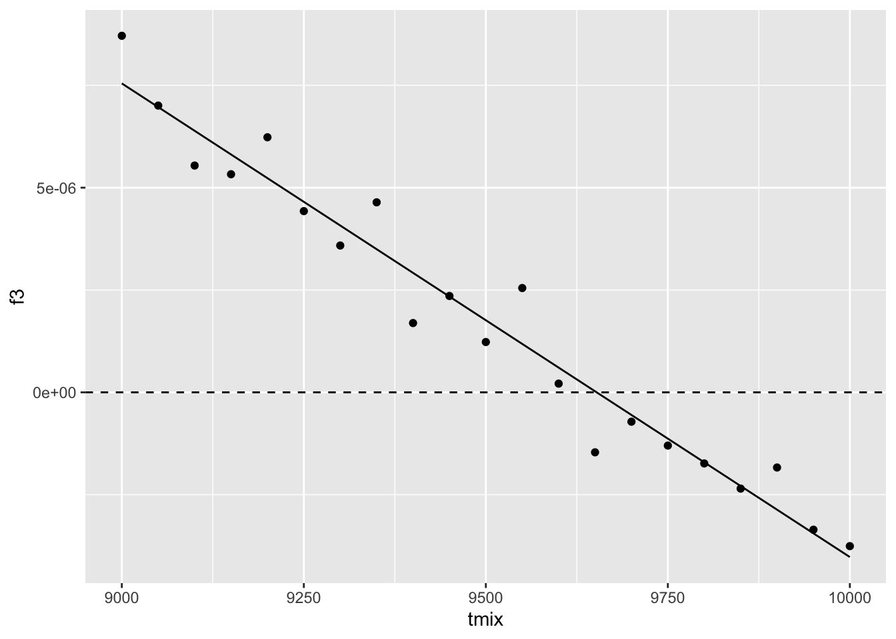
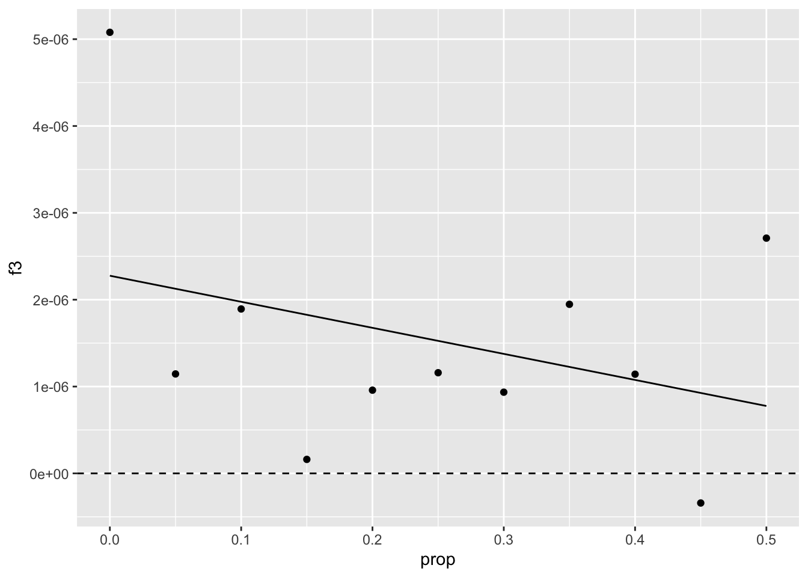
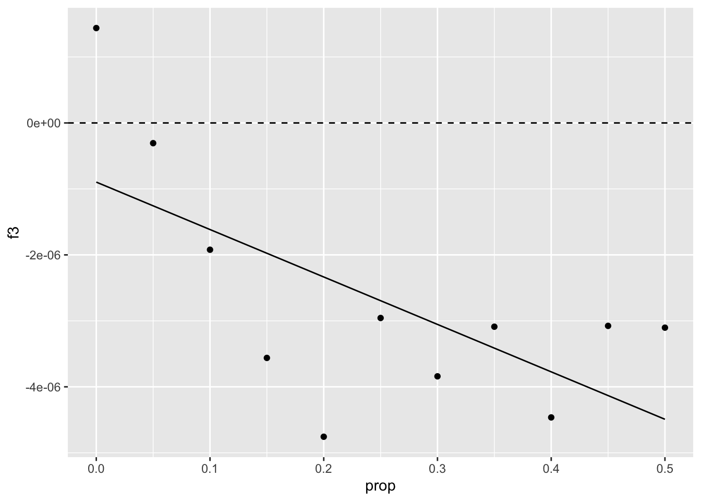
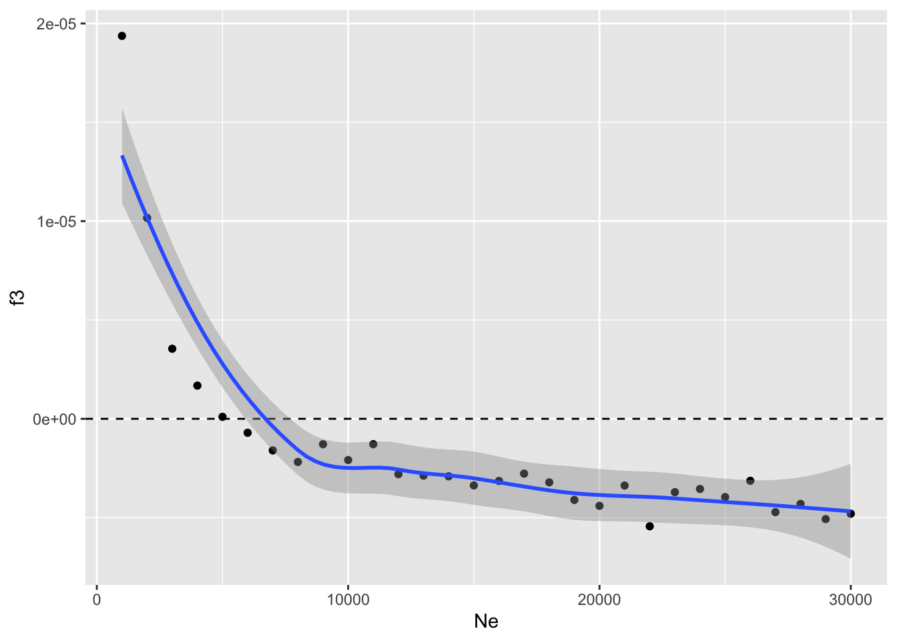

Warning: package 'slendr' was built under R version 4.6.1
init_env()
Python virtual environment for slendr has been activated.
library(dplyr) # manipulating tabular data
Attaching package: 'dplyr'
The following objects are masked from 'package:stats':
filter, lag
The following objects are masked from 'package:base':
intersect, setdiff, setequal, union
library(ggplot2) # data visualizationlibrary(purrr) # convenient looping
Whenever we want to evaluate the behavior of some statistic of interest under a range of demographic scenarios and across different model parameters, it’s always useful to first establish a skeleton structure with concrete values of model parameters, before we wrap it in a dedicated function.
Let’s do this here too.
tsplit <-9000p1 <-population("p1", N =1000, time =1)p2 <-population("p2", N =1000, time = tsplit, parent = p1)p3 <-population("p3", N =1000, time = tsplit, parent = p1)model <-compile_model(list(p1, p2, p3), generation_time =1, simulation_length =10000)plot_model(model, order =c("p1", "p2", "p3"), proportions =TRUE)

compute_outgroup_f3 <-function(tsplit) { p1 <-population("p1", N =1000, time =1) p2 <-population("p2", N =1000, time = tsplit, parent = p1) p3 <-population("p3", N =1000, time = tsplit, parent = p1) model <-compile_model(list(p1, p2, p3), generation_time =1, simulation_length =10000) ts <-msprime(model, sequence_length =20000000, recombination_rate =1e-8) %>%ts_mutate(1e-8) samples <-ts_names(ts, split ="pop")ts_f3(ts, A = samples["p1"], B = samples["p2"], C = samples["p3"]) %>%mutate(tsplit = tsplit)}
compute_outgroup_f3(1000)
# A tibble: 1 × 5
A B C f3 tsplit
<chr> <chr> <chr> <dbl> <dbl>
1 p1 p2 p3 0.0000906 1000
compute_outgroup_f3(2000)
# A tibble: 1 × 5
A B C f3 tsplit
<chr> <chr> <chr> <dbl> <dbl>
1 p1 p2 p3 0.0000817 2000
compute_outgroup_f3(5000)
# A tibble: 1 × 5
A B C f3 tsplit
<chr> <chr> <chr> <dbl> <dbl>
1 p1 p2 p3 0.0000510 5000
f3_outgroup <-map_dfr(seq(500, 10000, by =1000), compute_outgroup_f3)
ggplot(f3_outgroup, aes(tsplit, f3, color = tsplit)) +geom_point() +geom_smooth(method ="lm", se =FALSE, color ="black", size =0.5) +geom_hline(yintercept =0, linetype ="dashed") +coord_cartesian(xlim =c(0, 10000))
Warning: Using `size` aesthetic for lines was deprecated in ggplot2 3.4.0.
ℹ Please use `linewidth` instead.
`geom_smooth()` using formula = 'y ~ x'

“Admixture” \(f_3\)
Now let’s explore the application of the \(f_3\) statistic in its other common use, which is an admixture test. To do this, you will need to expand our baseline population model a little bit.
The population p1 is still the outgroup, but the p2 and p3 population now merge at a time tmix to form a population px. Note that due to the way in which slendr currently implements population merges, you will first need to program the split of px from p2 at time tmix - 1, followed immediately at time tmix by admixture from p2 at some define total proportion rate. To approximate the idea of a population merge as closely as possible within the constraints of the slendr interface, program this admixture to end after a single generation (i.e., ending at time tmix + 1).
tmix <-8000prop <-0.1Ne <-5000p1 <-population("p1", N =5000, time =1)p2 <-population("p2", N =5000, time =5000, parent = p1)p3 <-population("p3", N =5000, time =5000, parent = p1)px <-population("px", N = Ne, time = tmix -1, parent = p2)gf <-gene_flow(from = p3, to = px, start = tmix, end = tmix +1, proportion = prop)model <-compile_model(list(p1, p2, p3, px), gene_flow = gf, generation_time =1, simulation_length =10000)plot_model(model, order =c("p1", "p2", "px", "p3"), proportions =TRUE)

compute_admix_f3 <-function(tmix, prop, Ne) { p1 <-population("p1", N =5000, time =1) p2 <-population("p2", N =5000, time =5000, parent = p1) p3 <-population("p3", N =5000, time =5000, parent = p1) px <-population("px", N = Ne, time = tmix -1, parent = p2) gf <-gene_flow(from = p3, to = px, start = tmix, end = tmix +1, proportion = prop) model <-compile_model(list(p1, p2, p3, px), gene_flow = gf, generation_time =1, simulation_length =10000) ts <-msprime(model, sequence_length =20000000, recombination_rate =1e-8) %>%ts_mutate(1e-8) samples <-ts_names(ts, split ="pop")ts_f3(ts, A = samples["px"], B = samples["p1"], C = samples["p2"]) %>%mutate(tmix = tmix, prop = prop, Ne = Ne)}
compute_admix_f3(8000, 0.1, 5000)
# A tibble: 1 × 7
A B C f3 tmix prop Ne
<chr> <chr> <chr> <dbl> <dbl> <dbl> <dbl>
1 px p1 p2 0.0000163 8000 0.1 5000
compute_admix_f3(9000, 0.1, 5000)
# A tibble: 1 × 7
A B C f3 tmix prop Ne
<chr> <chr> <chr> <dbl> <dbl> <dbl> <dbl>
1 px p1 p2 0.00000710 9000 0.1 5000
compute_admix_f3(10000, 0.1, 5000)
# A tibble: 1 × 7
A B C f3 tmix prop Ne
<chr> <chr> <chr> <dbl> <dbl> <dbl> <dbl>
1 px p1 p2 -0.00000362 10000 0.1 5000
f3_tmix1 <-map_dfr(seq(9000, 10000, by =50), compute_admix_f3, prop =0.1, Ne =5000)
ggplot(f3_tmix1, aes(tmix, f3)) +geom_point() +geom_hline(yintercept =0, linetype ="dashed") +geom_smooth(method ="lm", se =FALSE, color ="black", size =0.5) +coord_cartesian(xlim =c(9000, 10000))
`geom_smooth()` using formula = 'y ~ x'

Clearly, the trend presented by the \(f_3\) values suggests that the statistic loses power to detect admixture sometime around 500 generations before the age of our px samples.
Under which conditions would the \(f_3\) statistic gain more power?
Exercise
Fix the tadmix parameter to 9500 (a value at which our previous simulation suggests \(f_3\) losing power) and evaluate a range of admixture proportions prop up to 50% gene flow. Does \(f_3\) pick up the admixture signal for any admixture proportion?
f3_prop <-map_dfr(seq(0, 0.5, by =0.05), compute_admix_f3, tmix =9500, Ne =5000)
ggplot(f3_prop, aes(prop, f3)) +geom_point() +geom_hline(yintercept =0, linetype ="dashed") +geom_smooth(method ="lm", se =FALSE, color ="black", size =0.5) +coord_cartesian(xlim =c(0, 0.5))
`geom_smooth()` using formula = 'y ~ x'

Increase Ne baseline:
f3_prop <-map_dfr(seq(0, 0.5, by =0.05), compute_admix_f3, tmix =9500, Ne =20000)
ggplot(f3_prop, aes(prop, f3)) +geom_point() +geom_hline(yintercept =0, linetype ="dashed") +geom_smooth(method ="lm", se =FALSE, color ="black", size =0.5) +coord_cartesian(xlim =c(0, 0.5))
`geom_smooth()` using formula = 'y ~ x'

Exercise
It looks like the answer is “no”. How about when you do the same but this time fixing prop = 0.1 and keeping tmix = 9500 (i.e., values for which our original \(f_3\) simulation didn’t pick up evidence of admixture), but this time evaluating a range of Ne values across seq(from = 5000, to = 25000, by = 2500)? Increasing values of Ne minimize the effect of genetic drift after admixture—do you see this also increasing the statistical power of \(f_3\)?
f3_Ne <-map_dfr(seq(from =1000, to =30000, by =1000), compute_admix_f3, tmix =9500, prop =0.2)
`geom_smooth()` using method = 'loess' and formula = 'y ~ x'

It looks like the amount of drift (represented by the Ne parameter) really is what determines whether or not can \(f_3\) detect admixture for a given model (represented by a fixed tmix time and prop admixture proportion). In fact, once we reach a certain size of the admixed population, the \(f_3\) value reaches a stable level below zero.
f3_Ne <-map_dfr(seq(from =1000, to =30000, by =1000), compute_admix_f3, tmix =9500, prop =0.2)